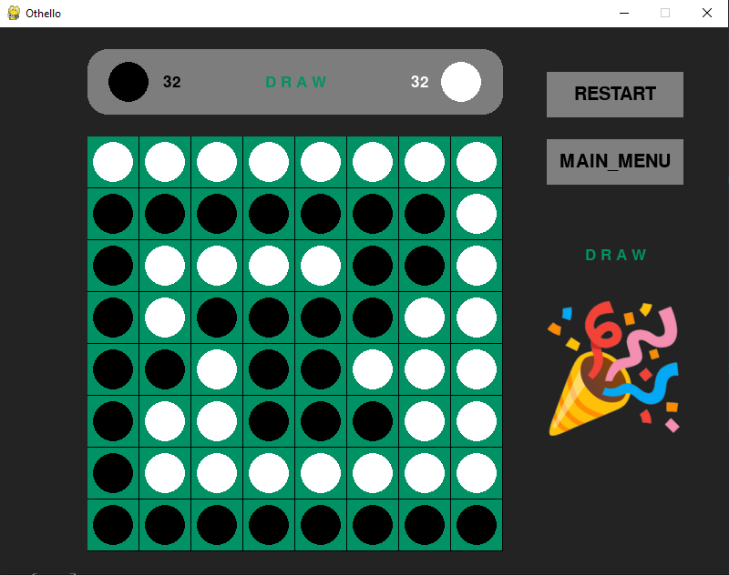

Coursework project · April – June 2024
Othello AI
Four ways to choose a move on an 8×8 board — exhaustive search, pruned search, random simulation, and a learned value — implemented in one engine so they can play each other.
Othello is a useful testbed because the branching factor is small enough that classical search is tractable, but the value of a position is famously hard to hand-write — early disc advantage is often a liability. That makes it a clean place to put search-based and learned agents side by side and let them play.
The four agents
Minimax
Builds the game tree to a fixed depth and backs up a heuristic score, assuming the opponent plays optimally. Exact for the depth it reaches, and it will solve the endgame outright once the horizon reaches a terminal state. The cost is exponential in depth, and it gives the opponent credit for never blundering.
Alpha-beta pruning
The same search, with branches discarded once they cannot affect the result: a move worse than the current lower bound cannot be chosen, so its subtree is never expanded. Identical output to minimax, substantially less work, which buys extra depth for the same time budget. It is still bounded by the horizon.
Monte Carlo tree search
Rather than evaluating positions with a heuristic, MCTS plays random games out from candidate moves and keeps the statistics, expanding the branches that look promising while still sampling the rest. It needs no evaluation function and adapts to how the opponent actually plays, but it costs more computation per move and offers no optimality guarantee.
Actor-critic, trained by self-play
A residual network with two heads — a policy head proposing moves and a value head scoring the position — used to guide the tree search instead of random rollouts. Training is the AlphaZero loop: the engine plays itself, stores (state, policy, value) triples, fits the network to them, and repeats with the improved network driving the next round of games.
python generate_eps.py --self_play 100 # self-play games → training data
python training_eps.py --BatchSize 32 --lr 1e-4 --epochs 10
python run.py --self_play 1000 --search 1500 --iterations 10Search depth, simulation count and network shape are all exposed as flags (--depth, --search, --NB, --NH), so any two agents can be matched at comparable compute rather than at their defaults — which is the only way the comparison means anything.
Playing them against each other

Every player slot is independent, so the same board supports human against engine, engine against engine, and human against human. MCTs_vs_MinMax.py runs the head-to-head case without the GUI, which is what makes systematic comparison practical.
Interface


Limitations
- The actor-critic agent was trained on a modest number of self-play iterations on a single machine. It plays credibly but has not been trained to the point where it reliably beats a deep alpha-beta search.
- The minimax heuristic is hand-written and weights disc count and mobility; a stronger evaluation would change the search comparison meaningfully.
- Agents are compared at default settings rather than at matched wall-clock budgets, so the head-to-head results indicate more than they prove.